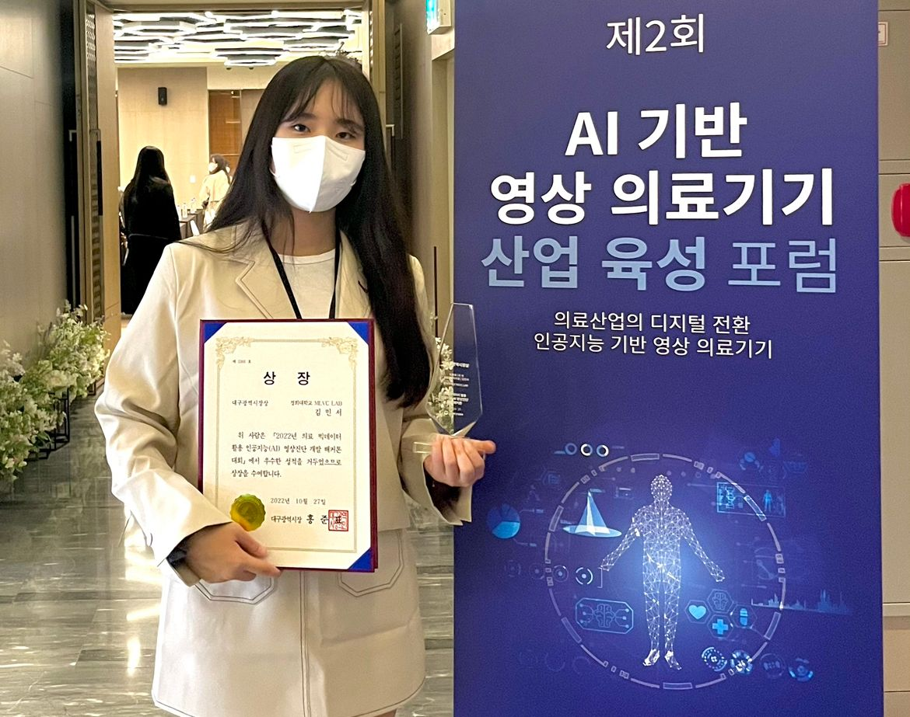
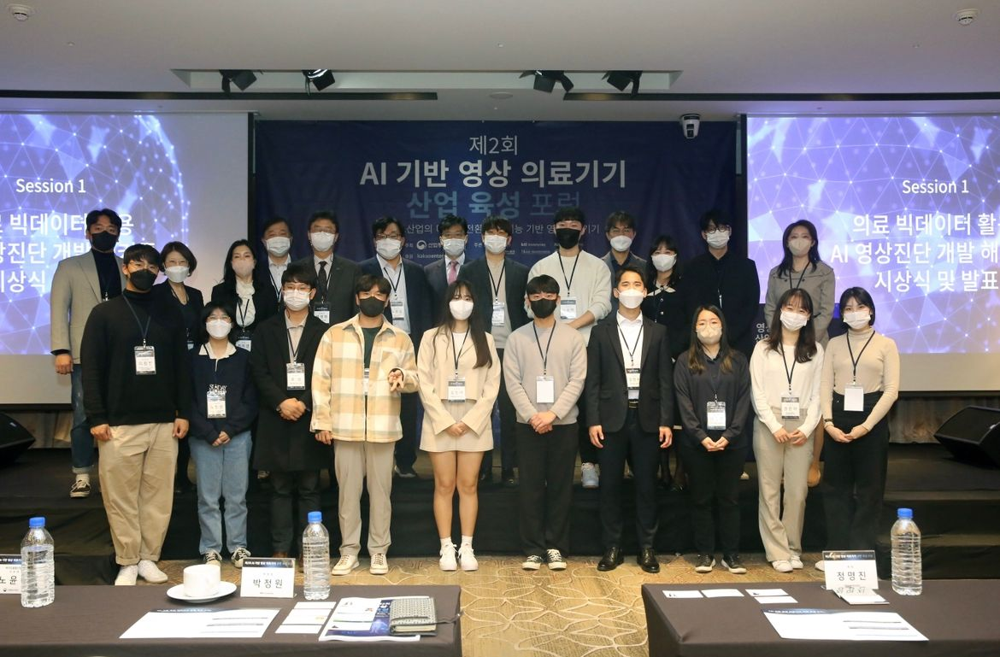
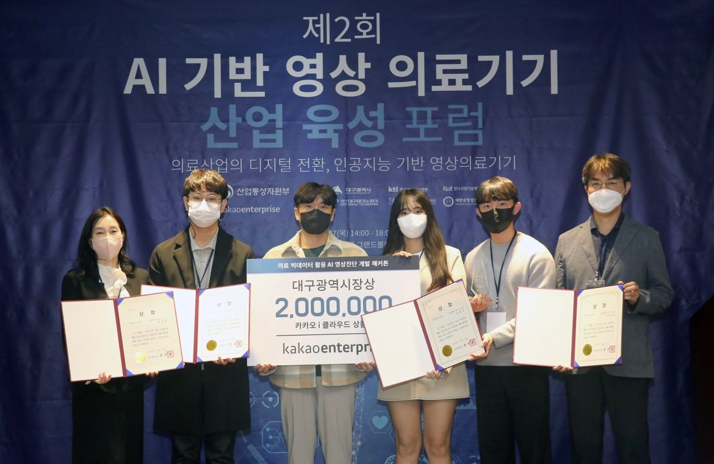
대회 설명
대회 내용
의료영상을 활용하여 질병을 진단할 수 있는 인공지능 영상분석 솔루션 개발
대회 과제
- CXR
- Pneumothorax 발병 여부 판단
- Pneumothorax 발병 위치 식별
- Mammography(LMRO,LCC, RMLO,LMLO)
- Breast cancer 발병 여부 판단
- Breast cancer 발병 위치 식별
주최/주관
ㅇ 주 최 : 산업통상자원부
ㅇ주관 : 대구광역시, 한국산업기술시험원, (재)대구테크노파크, 한국산업기술평가관리원, 대한의학영상정보학회, 대한유방검진학회
ㅇ후원 : 카카오엔터프라이즈
해결 방법
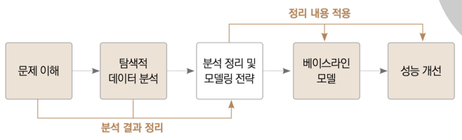
데이터 분석
환자의 개인적 정보가 담겨 있으므로 데이터 유출 금지 대회입니다.
아래 이미지는 인터넷 검색으로 얻은 예시입니다.
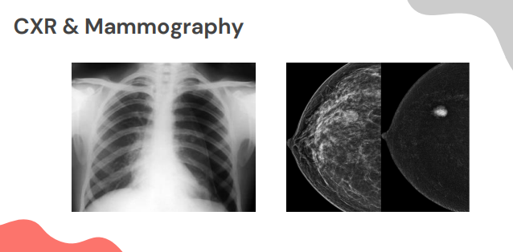
모델 탐색
카카오 사에서 제공한 환경(인터넷 접속 불가, 동시 1인만 접속 가능)에서는 팀원 전체가 효율적으로 모델을 학습시키고 비교하기에 부적합했습니다. 따라서 ChestX-Ray14 데이터셋을 활용해 외부 환경에서 모델 탐색 과정을 가졌습니다.
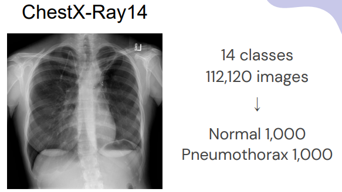
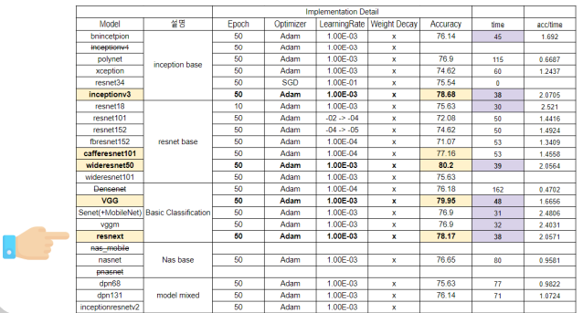
Classification - ResNext50
Segmentation - Deeplabv3
과정 중 문제 사항
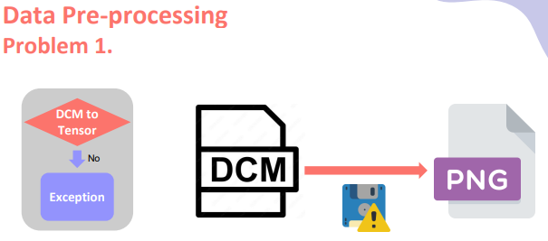
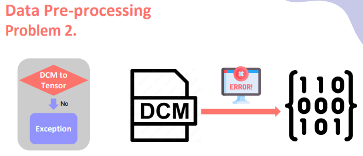
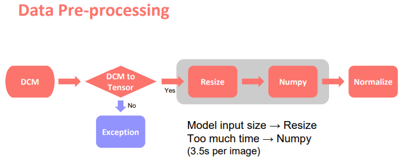
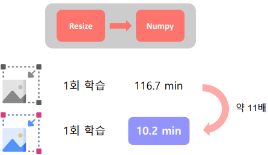
의미
- ‘의료’라는 새로운 분야 도전(분야 자체에 대한 의미, 데이터(DCM)에 대한 낯섦)
- 밤을 새 가며 얻은 팀워크
- 카카오 사에서 제공해 주신 성능 좋은 GPU
- 수상자 자격으로 포럼에서 발표할 기회를 얻으며 공공 의료에 기여
- 다른 연구원들과의 만남